WWDC 2021: Platforms State of the Union
Find hereafter a detailed summary of the above named video which belongs to a taxonomy of some WWDC footages.
The original video is available on the official Apple website (session 102).
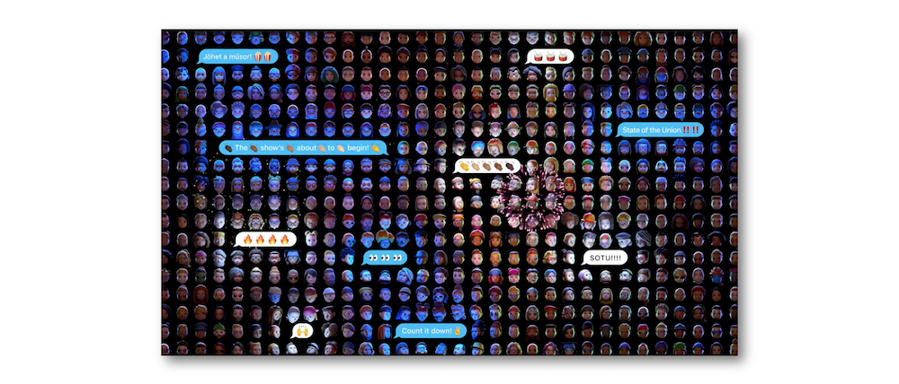
"Take a deeper dive into the new tools, technologies, and advances across Apple platforms that will help you create even better apps."
Various contents of this video are indicated hereunder:
Most of the illustrations are parts of the Apple presentations and may be available at the Resources section inside the Overview sheet of each video.
Hereafter, the underlined elements lead directly to the playback of the WWDC video at the appropriate moment.
Xcode Cloud #
This new tool deeply bound to Xcode and hosted in the cloud aims at supporting development for all Apple platforms including continuous integration and delivery service.
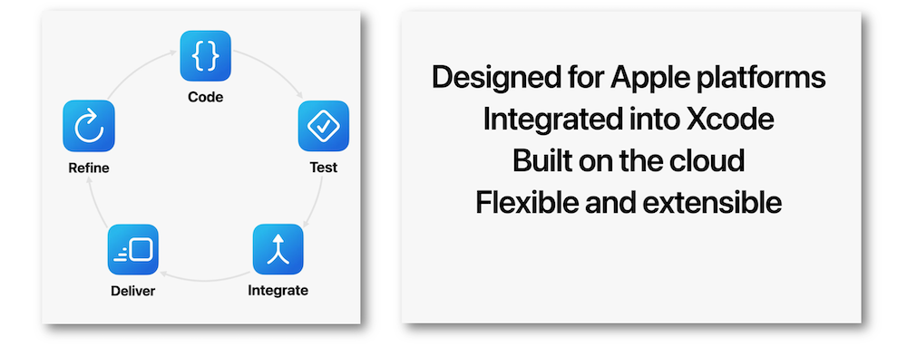
Get started with Xcode Cloud in four steps:
-
Select the product.
-
Confirm the workflow.
-
Grant acces to the source code.
-
Link with App Store Connect.
Many improvements for the Tests are highlighted thanks to a demo.
The delivery process becomes easier...
... and crash logs are rapidly shown up in the Xcode Organizer.
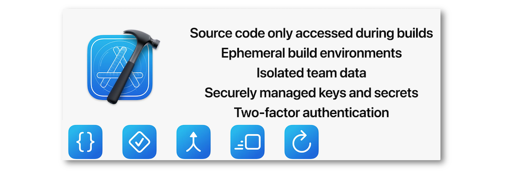
Swift #
The modern async/await pattern is now built into Swift...
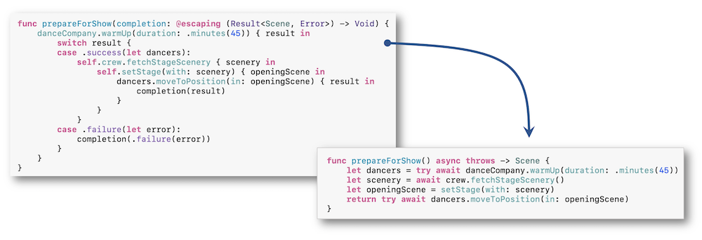
... adding a structured concurrency with its safe model including the new actors objects and the @MainActor annotation.
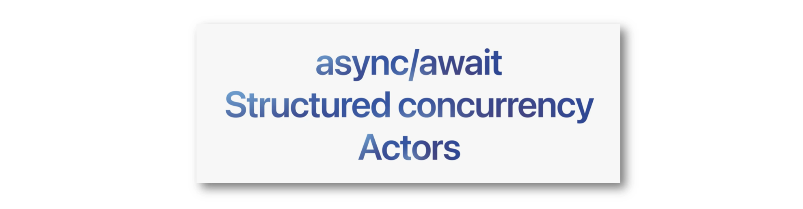
SwitUI #
Many enhancements have been provided to SwiftUI not to mention accessibility.
Swift Playgrounds 4 is the tool to create apps on Ipad, submit them directly to the App Store while bringing this work seamlessly to Xcode.
Augmented Reality #
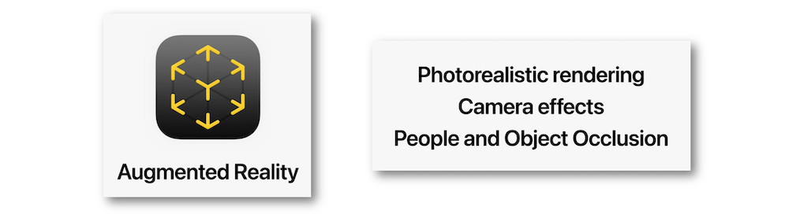
Apple has brought RealityKit 2 that enables to make a 3D model in minutes ⟹ demo
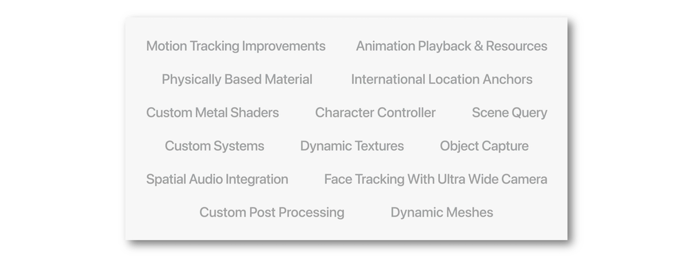
A unified Apple graphics platform with a common architecture based on Metal has been created increasing performance and power efficiency.
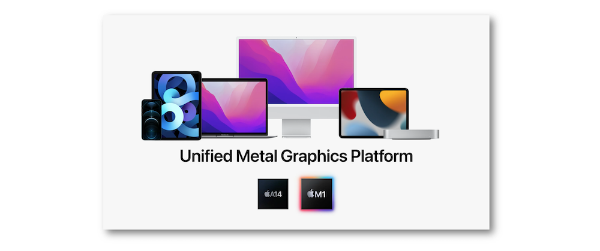
Xcode 13 adds powerful new graphics developer tools in order to debug efficiently the GPU code (click on the images below to get the corresponding playback):
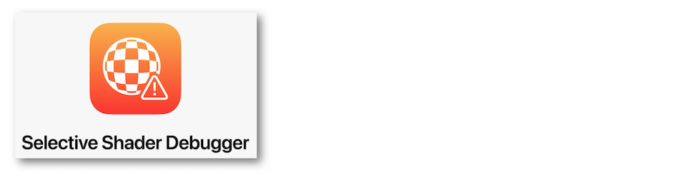
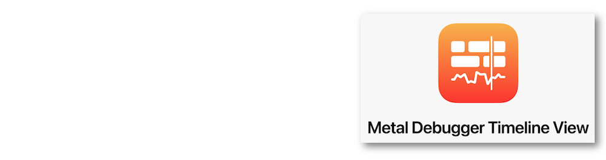
Focus #
Notifications now use one of the four interruption levels that may be linked to the brand new summary that can be customized by the user.
Screen Time #
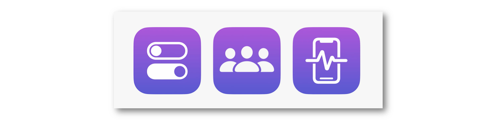
Three new Swift frameworks have been devised in the iOS SDK to enhance the parental controls:
Widgets #
Widgets have now a new extra-large size that has been made for taking advantage of the entire width of the screen.
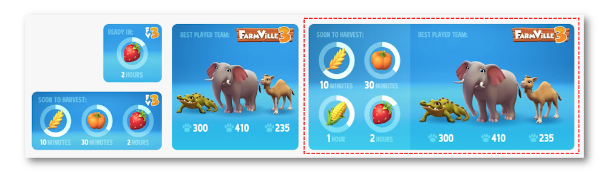
Moreover, Smart Stacks are introduced to place multiple widgets on top of each other.
Widget Suggestions is a good way to add dynamically a widget in the stack according to the app it belongs is used.
Shareplay #
Shareplay is the new way to share activities with a group of friends on the device: group and activity are the most two important concepts in this feature ⟹ demo to use the Group Activities in a media app for developers.
Shareplay is a perfect mean to interact with people in the group using the same interface with a complete synchronization.
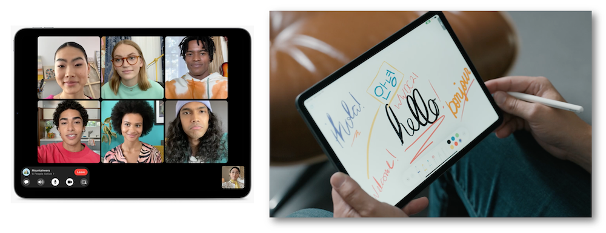